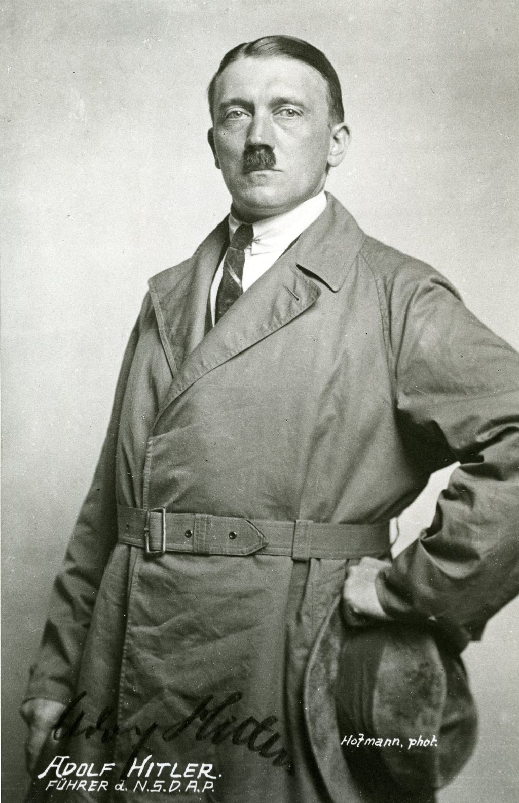

HISTÓRIA GERAL - 2ª GUERRA MUNDIAL
Resumo de História: 2a GUERRA MUNDIAL (Débora Aladim)
A História de Hitler
NAZISMO E FASCISMO
Segunda Guerra Mundial | Resumindo
O que faziam os parentes de Hitler durante e após a II Guerra?
Como ADOLF HITLER chegou ao PODER?
WHAT IF HITLER HAD WON WORLD WAR II?
A VERDADE POR TRÁS DA MORTE DE HITLER - Nostalgia Animado
German Soldier's Song - "Erika" (with English Subtitles)
A FEB: O Brasil na Segunda Guerra Mundial
A HISTÓRIA DO BRASIL NA 2º GUERRA MUNDIAL
Como Hitler e os Nazistas modificaram a Bíblia
QUEM FORAM as pessoas PRÓXIMAS de ADOLF HITLER
Resumo da Segunda Guerra Mundial
A Segunda Guerra Mundial foi um conflito global que ocorreu de 1939 a 1945, envolvendo a maioria das nações do mundo, incluindo todas as grandes potências, organizadas em dois blocos opostos: os Aliados e as Potências do Eixo. O conflito teve início com a invasão da Polônia pela Alemanha em setembro de 1939 e se expandiu rapidamente, com países ao redor do globo se envolvendo em batalhas terrestres, marítimas e aéreas.
Os principais líderes das Potências do Eixo incluíam Adolf Hitler da Alemanha, Benito Mussolini da Itália e Hirohito do Japão. Em contrapartida, os Aliados eram liderados por países como os Estados Unidos, Reino Unido, União Soviética e China. A guerra foi marcada por batalhas devastadoras, como a Batalha de Stalingrado, o Dia D e a Batalha de Midway, além de eventos significativos como o Holocausto e o lançamento das bombas atômicas em Hiroshima e Nagasaki.
A Segunda Guerra Mundial terminou em 1945 com a rendição incondicional das Potências do Eixo. A guerra resultou em mudanças geopolíticas significativas, a criação das Nações Unidas, o início da Guerra Fria e uma reconstrução global que moldou o cenário político e econômico do pós-guerra. O conflito deixou um legado duradouro, influenciando a política internacional, a economia e as relações entre nações até os dias atuais.
Adolf Hitler
Adolf Hitler (1889-1945) foi o líder do Partido Nacional Socialista dos Trabalhadores Alemães (Partido Nazista) e o principal responsável pelo início da Segunda Guerra Mundial. Nascido em Braunau am Inn, na Áustria, Hitler se tornou uma figura central na política alemã durante a década de 1930.
Em 1933, Hitler se tornou chanceler da Alemanha e, pouco depois, consolidou seu poder, estabelecendo uma ditadura totalitária. Seu regime promoveu políticas de extrema nacionalismo e racismo, que culminaram no Holocausto, o genocídio sistemático de seis milhões de judeus, além de milhões de outras vítimas, incluindo ciganos, homossexuais e prisioneiros de guerra.
A invasão da Polônia em setembro de 1939 marcou o início da Segunda Guerra Mundial, um conflito que se espalhou por toda a Europa e além. Durante a guerra, Hitler liderou a Alemanha em várias campanhas militares, mas, eventualmente, a guerra se voltou contra ele. Em abril de 1945, com a Alemanha derrotada e o regime nazista em colapso, Hitler cometeu suicídio em seu bunker em Berlim.
Seu legado é amplamente condenado devido às atrocidades cometidas durante seu regime e ao impacto devastador da guerra que ele provocou.
">